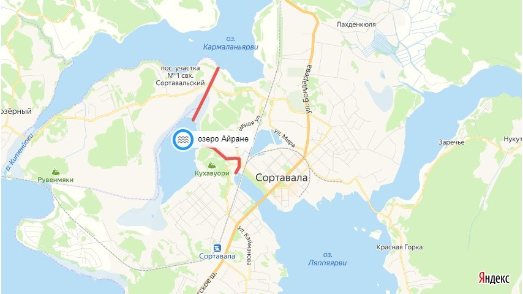
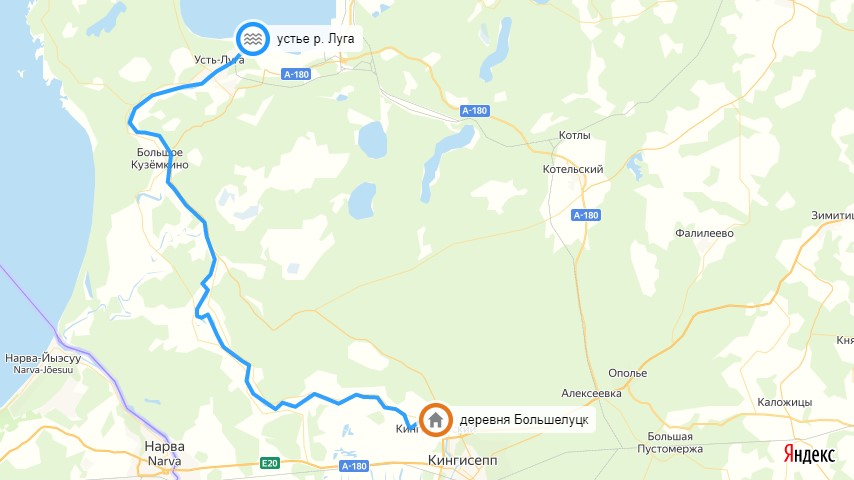

Сохранить как PDF
ПРАВИЛА РЫБОЛОВСТВА С КАРТИНКАМИ
взамен Правил утвержденных приказом Минсельхоза России 06 ноября 2014 г. N 427.
Утверждены
приказом Минсельхоза России
от 21 октября 2020 N 620
вступает в силу с 1 сентября 2021 г. и действует до 1 сентября 2027 г.
Зарегистрировано в Минюсте России 3 марта 2021 г. N 62649
ПРАВИЛА
РЫБОЛОВСТВА ДЛЯ ЗАПАДНОГО РЫБОХОЗЯЙСТВЕННОГО БАССЕЙНА
(здесь выписка, которая касается любительского рыболовства)
I. Общие положения
Пропускаем . . .
II. Требования к сохранению водных биоресурсов
(выписка)
Посмотреть, жми сюда!
10. Любительское рыболовство осуществляется гражданами Российской Федерации свободно и бесплатно на водных объектах общего пользования, за исключением случаев, предусмотренных Федеральным законом от 25 декабря 2018 г. N 475-ФЗ "О любительском рыболовстве и о внесении изменений в отдельные законодательные акты Российской Федерации" и другими федеральными законами.
10.5. Гражданам ЗАПРЕЩАЕТСЯ осуществлять любительское рыболовство:
на используемых для прудовой аквакультуры и не находящихся в собственности граждан или юридических лиц обводненных карьерах, прудах (в том числе образованных водоподпорными сооружениями на водотоках) и на используемых в процессе функционирования мелиоративных систем (включая ирригационные системы) водных объектах;
на иных водных объектах, предоставленных для осуществления товарной аквакультуры (товарного рыбоводства), за исключением случаев, если в соответствии с федеральными законами на указанных водных объектах допускается осуществлять добычу (вылов) водных животных и растений, не являющихся объектами аквакультуры <10>.
--------------------------------
<10> Статья 6 Федерального закона от 25 декабря 2018 г. N 475-ФЗ "О любительском рыболовстве и о внесении изменений в отдельные законодательные акты Российской Федерации".
14. При осуществлении рыболовства запрещается:
14.2. юридическим лицам, индивидуальным предпринимателям и гражданам осуществлять добычу (вылов) водных биоресурсов:
с судов и плавучих средств, не зарегистрированных в установленном порядке (за исключением судов и плавучих средств, не подлежащих государственной регистрации) <19>;
--------------------------------
<19> Статья 33 Кодекса торгового мореплавания Российской Федерации.
с применением колющих орудий добычи (вылова) (за исключением любительского рыболовства способом подводной добычи водных биоресурсов, осуществляемого с использованием специальных пистолетов и ружей для подводной охоты (далее - подводная охота), пневматического оружия, огнестрельного оружия, орудий и способов добычи (вылова), воздействующих на водные биоресурсы электрическим током, а также взрывчатых, токсичных, наркотических средств (веществ) и других запрещенных законодательством Российской Федерации орудий и способов добычи (вылова);
путем протягивания в воде багра или крюка без приманок и наживок для зацепа рыбы (далее - багрение);
путем оглушения рыбы, находящейся у поверхности воды, путем нанесения ударов по воде или ледовому покрову орудиями добычи (вылова) или иными предметами (далее - глушение);
путем загона водных биоресурсов в орудие добычи (вылова) с использованием предметов, при ударах которыми в воде создаются звуковые колебания, или с помощью орудий добычи (вылова), которыми рыба загоняется в сеть или ловушку из прибрежной растительности (далее - гон);
на внутренних водных путях (судоходных фарватерах), используемых для судоходства (за исключением согласованных с бассейновыми органами государственного управления на внутреннем водном транспорте районов, в которых не создаются помехи водному транспорту);
на зимовальных ямах;
в пределах установленных в соответствии с законодательством Российской Федерации охраняемых зон отчуждения гидротехнических сооружений и мостов <20>
--------------------------------
<20> Постановление Правительства Российской Федерации от 21 ноября 2005 г. N 690 "Об утверждении Положения об охране судоходных гидротехнических сооружений и средств навигационного оборудования" (Собрание законодательства Российской Федерации, 2005, N 48, ст. 5040; 2016, N 47, ст. 6679), постановление Правительства Российской Федерации от 6 сентября 2012 г. N 884 "Об установлении охранных зон для гидроэнергетических объектов" (Собрание законодательства Российской Федерации, 2012, N 37, ст. 5004; 2016, N 22, ст. 3223), статьи 88 - 93 Земельного кодекса Российской Федерации от 25 октября 2001 г. N 136-ФЗ (Собрание законодательства Российской Федерации, 2001, N 44, ст. 4147; 2018, N 32, ст. 5135).
в запретных и закрытых районах добычи (вылова) и в запретные для добычи (вылова) сроки (периоды);
на расстоянии менее 0,5 км от территории рыбоводных хозяйств, а также от садков для выращивания и выдерживания рыбы;
в периоды выпуска молоди рыб рыбоводными организациями и в течение 15 дней с момента окончания указанных периодов в водных объектах рыбохозяйственного значения на расстоянии менее 0,5 км от мест выпуска, за исключением добычи (вылова) хищных и малоценных видов рыб в целях предотвращения выедания молоди водных биоресурсов в местах ее выпуска <21>;
--------------------------------
<21> Приказ Минсельхоза России от 18 июня 2014 г. N 196 "Об утверждении перечня хищных видов и малоценных видов водных биологических ресурсов для каждого рыбохозяйственного бассейна" (зарегистрирован Минюстом России 23 июля 2014 г., регистрационный N 33222) с изменениями, внесенными приказом Минсельхоза России от 22 января 2016 г. N 23 "О внесении изменения в перечень хищных видов и малоценных видов водных биологических ресурсов для каждого рыбохозяйственного бассейна, утвержденный приказом Министерства сельского хозяйства Российской Федерации от 18 июня 2014 г. N 196" (зарегистрирован Минюстом России 19 февраля 2016 г., регистрационный N 41150).
при осуществлении любительского рыболовства - с применением сетных орудий добычи (вылова) водных биоресурсов на рыбоводных участках;
14.4. юридическим лицам, индивидуальным предпринимателям и гражданам:
14.4.1. <п.14 ЗАПРЕЩАЕТСЯ:> использовать без дезинфекции орудия добычи (вылова), ранее использованные в водных объектах рыбохозяйственного значения, в которых обнаружены очаги паразитарных и (или) инфекционных заболеваний водных биоресурсов, в других водных объектах рыбохозяйственного значения <22>>;
--------------------------------
<22>> Постановление Правительства Российской Федерации от 23 июля 2016 г. N 718 "О порядке осуществления мониторинга ветеринарной безопасности районов добычи (вылова) водных биологических ресурсов" (Собрание законодательства Российской Федерации, 2016, N 31, ст. 5032).
14.4.2. <п.14 ЗАПРЕЩАЕТСЯ:> устанавливать:
орудия добычи (вылова) с перекрытием более 2/3 ширины русла реки, ручья или протоки, при этом наиболее глубокая часть русла должна оставаться свободной. Запрещается также одновременный или поочередный замет неводов с противоположных берегов водотока с полным перекрытием поверхности водного объекта (далее - в замок);
ставные орудия добычи (вылова) в шахматном порядке с расстоянием менее 0,1 км между порядками по одной линии и (или) между линиями;
14.4.3. <п.14 ЗАПРЕЩАЕТСЯ> выбрасывать (уничтожать) или отпускать добытые (выловленные) водные биоресурсы, разрешенные для добычи (вылова), за исключением:
любительского рыболовства, осуществляемого с последующим выпуском добытых (выловленных) водных биоресурсов в естественную среду обитания в живом виде с наименьшими повреждениями (далее - рыболовство по принципу "поймал-отпустил");
рыболовства в целях аквакультуры (рыбоводства), если добытые (выловленные) водные биоресурсы не соответствуют по своим биологическим характеристикам целям данного вида рыболовства;
рыболовства в научно-исследовательских и контрольных целях;
14.4.4. В случае добычи (вылова) запрещенных видов водных биоресурсов либо превышения разрешенного прилова водных биоресурсов, не указанных в разрешении на добычу (вылов) водных биоресурсов, на которые установлен общий допустимый улов (далее - ОДУ), они должны с наименьшими повреждениями, независимо от их состояния, выпускаться в естественную среду обитания.
При этом юридические лица, индивидуальные предприниматели и граждане обязаны:
сменить позицию добычи (вылова) (трасса следующего траления либо позиция следующего замета, постановки орудий добычи (вылова) должна отстоять не менее чем на 5 морских миль (для морских районов) и не менее чем 0,5 км (во внутренних водах, за исключением внутренних морских вод) от любой точки предыдущего траления, замета или постановки) либо заменить орудия добычи (вылова) на другие, в том числе имеющие более крупный размер (шаг) ячеи, а при повторном превышении разрешенного прилова - прекратить добычу (вылов) водных биоресурсов в данном районе или на данном рыболовном (рыбопромысловом) участке и снять орудия добычи (вылова) либо привести их в состояние, не позволяющее осуществлять рыболовство;
отразить свои действия в судовых документах и промысловом журнале и направить данную информацию в территориальные органы Росрыболовства;
14.4.5.<п.14 ЗАПРЕЩАЕТСЯ> применять орудия добычи (вылова), имеющие размер и оснастку, а также размер (шаг) ячеи, не соответствующие требованиям Правил рыболовства;
14.4.6. <п.14 ЗАПРЕЩАЕТСЯ> производить добычу (вылов) акклиматизируемых видов водных биоресурсов до установления их ОДУ, за исключением рыболовства в научно-исследовательских и контрольных целях. Попавшие в орудия добычи (вылова) указанные водные биоресурсы должны немедленно с наименьшими повреждениями выпускаться в естественную среду обитания, а факт их добычи (вылова) и выпуска регистрироваться в промысловом журнале в графе "вес добытых (выловленных) водных биоресурсов по видам (кг)";
14.4.7. <п.14 ЗАПРЕЩАЕТСЯ> допускать нахождение ставных сетей в воде, считая с момента полной их установки, зафиксированного в промысловом журнале, до момента начала их переборки или выборки на берег или борт судна (застой сетей), превышающее: 48 часов - с 1 мая по 31 августа; 72 часа - с 1 сентября по 30 апреля;
14.4.11. <п.14 ЗАПРЕЩАЕТСЯ> использовать маломерные и прогулочные суда <23> с применением моторов в запретные сроки (периоды) на водных объектах рыбохозяйственного значения (или их участках), указанных в приложении N 1 к Правилам рыболовства "Перечень водных объектов рыбохозяйственного значения, на которых в сроки (периоды), запретные для добычи (вылова) водных биоресурсов, запрещается использование маломерных и прогулочных судов с применением моторов", за исключением несамоходных судов, а также других судов, применяемых для осуществления разрешенной деятельности по добыче (вылову) водных биоресурсов;
--------------------------------
<23> Статья 7 Кодекса торгового мореплавания Российской Федерации.
14.4.9. <п.14 ЗАПРЕЩАЕТСЯ> прекращать доступ кислорода и воды в водный объект рыбохозяйственного значения посредством уничтожения источников его водоснабжения, а также осуществлять спуск водных объектов рыбохозяйственного значения с целью добычи (вылова) водных биоресурсов (за исключением прудов, используемых для аквакультуры (рыбоводства), находящихся вне русел естественных водотоков и оборудованных гидротехническими сооружениями, регулирующими подачу и сброс воды);
14.4.10. допускать загрязнение водных объектов рыбохозяйственного значения и ухудшение естественных условий обитания водных биоресурсов;
14.4.11. портить и разрушать специальные информационные знаки <24> в рыбоохранных зонах водных объектов рыбохозяйственного значения;
--------------------------------
<24> Пункт 14 Правил установления рыбоохранных зон, утвержденных постановлением Правительства Российской Федерации от 6 октября 2008 г. N 743 (Собрание законодательства Российской Федерации, 2008, N 41, ст. 4682)..
14.5. Гражданам запрещается:
14.5.1. <п.14.5 ЗАПРЕЩАЕТСЯ> осуществлять подводную охоту:
в запретных и закрытых для рыболовства районах, в запретные для добычи (вылова) водных биоресурсов сроки (периоды);
в местах массового отдыха граждан;
с использованием аквалангов и других автономных дыхательных аппаратов;
с использованием индивидуальных электронных средств обнаружения водных биоресурсов под водой; <НОВАЯ РЕД.>
с применением орудий добычи (вылова), используемых для подводной добычи (вылова) водных биоресурсов, над поверхностью водных объектов; <НОВАЯ РЕД.>
14.5.2. <п.14.5 ЗАПРЕЩАЕТСЯ> применять специальные пистолеты и ружья для подводной охоты:
с берега, с борта плавучих средств и взабродку;
с борта плавучих средств и взабродку;
14.5.3. иметь на палубе судна и плавучих средств, рыболовных (рыбопромысловых) участках и в местах добычи (вылова) (при осуществлении рыболовства вне рыболовных (рыбопромысловых) участков) орудия добычи (вылова), применение которых в данном районе и в данный период времени запрещено, а также водные биоресурсы, добыча (вылов) которых в данном районе и в данный период времени запрещена, или их части.
III. Промышленное и прибрежное рыболовство
Пропускаем . . .
IV. Любительское рыболовство
25. 32-й подрайон Балтийского моря:
25.1. Сроки (периоды), запретные для добычи (вылова) водных биоресурсов:
- с 20 мая по 30 июня - судака и леща;
- от распаления льда по 15 июня - добыча (вылов) в бухтах Выборгского залива: Селезневская (<я предположил, что это устье р. Селезневка> 60.731071, 28.661001), Подберезовая (<я предположил, что это районе о. Подберезовый> 60.666207, 28.591390), Малая Пихтовая ( 60.589565, 28.612213) , а также в озере Зайчихино ( 60.440529, 28.824415);
- от распаления льда по 30 июня в озере Тихое и в протоке ( 59.505849, 28.087606), соединяющей озеро с рекой Россонь, в озере Липовском и в протоке, ( 59.744555, 28.150558), соединяющей озеро с Финским заливом.
25.2. Запретные для добычи (вылова) виды водных биоресурсов:
лосось атлантический (семга), за исключением всех рек (с притоками), впадающих в Финский залив;
осетр атлантический, кумжа (форель) (пресноводная жилая форма).
25.3. Виды запретных орудий и способов добычи (вылова) водных биоресурсов:
25.3.1. Запрещается:
а) применение:
сетей всех типов;
ловушек всех типов;
закидушек (донной снасти) и других пассивных орудий добычи (вылова) в местах обитания лососевых видов рыб, в том числе кумжи (форели) (пресноводной жилой формы);
ручных удочек и спиннинговых снастей всех систем и наименований с общим количеством крючков (одинарных, двойников или тройников, далее - крючков) более 10 штук на орудиях добычи (вылова) у гражданина;
бредней, неводов, тралящих орудий добычи (вылова);
подъемников, черпаков или других отцеживающих приспособлений размером более 100 x 100 см и с размером (шагом) ячеи более 10 мм;
острог и капканов;
электротока;
огнестрельного и пневматического оружия, за исключением ружей и пистолетов, применяемых для подводной охоты;
б) осуществление добычи (вылова):
способом багрения (на подсечку);
с использованием осветительных приборов и фонарей различных конструкций с поверхности и в толще воды в темное время суток (астрономическое, с захода до восхода солнца) (далее - на подсветку), за исключением осуществления подводной охоты, рыболовства с использованием удочек (в том числе донных удочек) и спиннинговых снастей всех систем и наименований, а также раколовок;
при помощи устройств частично или полностью перекрывающих русло водных объектов рыбохозяйственного значения и препятствующих свободному перемещению рыбы; <НОВАЯ РЕД.>
раколовками более трех штук у гражданина (диаметр каждой раколовки не более 80 см, размер (шаг) ячеи менее 20 мм); <Опечатка осталась, так и не исправили ее – надо читать текст в скобках так: «диаметр каждой раколовки более 80 см . . .»>
переметами с количеством крючков более 20 штук на орудиях добычи (вылова) у гражданина;
кружками и жерлицами с общим количеством крючков более 10 штук на орудиях добычи (вылова) у гражданина;
с применением судна, оснащенного парусом и (или) мотором, с использованием более двух приманок на одно судно или плавучее средство (далее - способом на дорожку (троллинг)). <НОВАЯ РЕД.>
25.3.2. Запрещается осуществлять добычу (вылов) водных биоресурсов, включая подводную охоту и сбор водных биоресурсов, с использованием аквалангов и других автономных дыхательных аппаратов.
25.4. Минимальные размеры добываемых (вылавливаемых) водных биоресурсов (промысловый размер):
запрещается производить добычу (вылов), приемку, обработку, перегрузку, транспортировку, хранение и выгрузку водных биоресурсов, имеющих в свежем виде длину (в см) менее указанной в таблице 30.
Таблица 30
|
Наименование водных биоресурсов |
промысловый размер, см |
|
Судак |
40 |
|
Щука |
30 |
|
Лещ |
29 |
Промысловый размер рыбы определяется от вершины рыла (при закрытом рте) до основания средних лучей хвостового плавника.
25.5. Суточная норма добычи (вылова) водных биоресурсов (за исключением случая, если для таких водных биоресурсов установлен постоянный или временный запрет добычи (вылова) при осуществлении любительского рыболовства) для одного гражданина при осуществлении любительского рыболовства указана в таблице 30.1.
Таблица 30.1
|
Наименование водных биоресурсов |
Суточная норма добычи (вылова) (внутренние воды Российской Федерации, за исключением внутренних морских вод Российской Федерации) |
|
Корюшка |
5 кг |
|
Судак |
5 экземпляров |
|
Щука |
5 кг |
|
Лещ |
5 кг |
Суммарная суточная норма добычи (вылова) для всех видов водных биоресурсов, не указанных в таблице 30.1, составляет не более 10 кг или один экземпляр в случае, если его вес превышает 10 кг.
В случае превышения суммарной суточной нормы добыча (вылов) водных биоресурсов прекращается.
26. Ладожское озеро с бассейнами впадающих в него рек:
26.1. Районы, ЗАПРЕТНЫЕ для добычи (вылова) водных биоресурсов:
в заливе Переменный (60.447038, 30.811605) от устья реки Авлога (60.459502, 30.800352) до мыса Максимова (60.444597, 30.820120) и вглубь озера до 5-метровой изобаты;
( в помощь: http://www.ladoga-lake.ru/images/maps/navi-su/21-25064.jpg )
на акватории Нижне-Свирского (60.581975, 32.803035); заповедника от устья реки Свирь до границы Ленинградской области с Республикой Карелия.
26.2. Сроки (периоды), запретные для добычи (вылова) водных биоресурсов:
а) от распаления льда по 15 июня - судака и леща;
б) от распаления льда до 31 мая - щуки;
в) в течение всего года - всеми орудиями и способами добычи (вылова), кроме добычи (вылова) одной поплавочной или донной удочкой с БЕРЕГА с общим количеством крючков не более 2 штук на орудиях добычи (вылова) у одного гражданина в реках, впадающих в Ладожское озеро (северная часть);
г) всеми орудиями и способами добычи (вылова):
с 20 апреля до 1 ноября - в протоке между озерами Ляппяярви (61.693023, 30.704053); и Айране (Больничное) (61.706262, 30.662717), а также в протоке между озерами Айране и Кармаланъярви (61.721462, 30.677474);

с 1 сентября до 15 ноября - в реках Лендерка, Емельяновка, Лузинка, Сулла; <НЕ НАШЕЛ>
с 1 мая по 30 июня - в реках Нимийоки, Мурдойоки и в озерах Пукшалампи, Мусталампи; <НЕ НАШЕЛ>
д) всеми орудиями добычи (вылова) и способами, кроме добычи (вылова) одной поплавочной или донной удочкой с берега с общим количеством крючков не более 2 штук на орудиях добычи (вылова) у одного гражданина:
от распаления льда до 20 июня - в северной части Ладожского озера в шхерных районах и до 10-метровой изобаты в открытой части;
от распаления льда до 15 июня - в водных объектах рыбохозяйственного значения, расположенных на территории природного парка "Валаамский архипелаг" (61.375590, 30.957014); в озерах Сисяярви (Внутреннее озеро), Лещевое (61.359343, 30.932855), Щучье озеро у креста, Коневецких озерах;
с 15 мая по 25 июня - в озерах Кармаланъярви (61.721652, 30.662519) и Хюмпеленярви (61.685106, 30.632182); в системе реки Китиенйоки (61.706850, 30.617738);
от распаления льда до 20 июня - в озере Янисъярви (61.987423, 30.940925);
с 15 октября по 31 декабря - в реке Тула (Лужма) (63.507755, 30.547542), а также озере Тулос (63.550287, 30.574698), перед истоком реки Тула (Лужма) в радиусе 1 км и менее;
е) с 15 мая по 25 июня всеми орудиями добычи (вылова) и способами, кроме добычи (вылова) одной поплавочной или донной удочкой с берега с общим количеством крючков не более 2 штук на орудиях добычи (вылова) у одного гражданина:
в заливе Тиурунланселькя (61.194220, 29.868602) (включая залив Пеконлахти (61.220205, 29.793776) в границах до линии: от мыса Туюла до северной оконечности острова Кюлянсаари (61.208895, 29.846248) и далее в юго-западном направлении до противоположной стороны залива через южную оконечность острова Эвасаари (61.204723, 29.828838);
( в помощь: https://ladoga-lake.ru/images/maps/navi-su/24-28073.jpg )
в заливе Янхинселькя (61.221411, 29.893092) (включая озеро Нехволанлахти (61.225953, 29.856336) и залив Аролахти (61.226853, 29.867820) в границах до линии: от южной оконечности полуострова Каскисаари (61.217440, 29.906385) в юго-западном направлении до противоположной стороны залива через северную оконечность острова Ситтасаари (61.217792, 29.88968);
( в помощь: http://www.fishingpiter.ru/maps/ladoga/4Zal_Lehmalahti_podhodi.gif )

в заливе Иятъярви (61.250313, 30.028021) в границах до линии: мыс Уконниеми (61.228680, 30.082888) - мыс Куркиниеми (61.226866, 30.082323);
( в помощь: http://www.fishingpiter.ru/maps/ladoga/7sortavala&priozersk.gif )
в заливах Хяннисенлахти (61.296431, 30.102604) и в Куллияйсенлахти (61.282895, 30.076723), в районе, ограниченном линией: от мыса Крестовый (61.286135, 30.179867) в западном направлении до северной оконечности острова Койонсаари (61.283193, 30.118483), далее по северному и западному побережью острова Койонсаари и от юго-западной оконечности этого острова до мыса Кюллиниеми;
(в помощь: http://www.fishingpiter.ru/maps/ladoga/7sortavala&priozersk.gif )

в заливе Мусталахти (61.514830, 30.267947) в границах до линии: от мыса Савинниеми (61.511642, 30.275983) в юго-западном направлении до противоположной стороны залива через северную оконечность острова Пайкасаари (61.505325, 30.262761);
(в помощь: https://ladoga-lake.ru/images/maps/navi-su/26-28075.jpg)
в заливе Кискилахти озера Метсоланселькя (61.512251, 30.318042) в границах до линии: от мыса Кархуниеми (61.517663, 30.314635) в западном направлении до противоположной стороны залива через северное побережье острова Куккассаари (61.516076, 30.308384);
(в помощь: https://ladoga-lake.ru/images/maps/navi-su/26-28075.jpg)
в районе Мейери (61.624173, 30.577889) (озеро Илялахти (61.624576, 30.549386) - залив Отсойстенлахти (61.618369, 30.582622) - пролив Рятсенсалми), ограниченной на западе линией: от мыса Хюрниеми до противоположной стороны пролива Рятсенсалми через западную оконечность острова Паскасаари;
(в помощь: http://www.fishingpiter.ru/maps/ladoga/7sortavala&priozersk.gif)
в заливе Касинлахти (61.667117, 30.677735) в границах до линии: южная оконечность полуострова Варвалинниеми (61.666480, 30.682663)() - западный выступ материка на противоположной стороне залива;
(в помощь: http://www.fishingpiter.ru/maps/ladoga/1sortavala_podhodi.gif)
в районе Сортавальского рейда (озеро Ляппяярви (61.692886, 30.704450) - пролив Ворссунсалми (61.710790, 30.735678) - пролив Уйттосалми (61.719650, 30.773472) - залив Сойккасенлахти (61.740055, 30.775230) - залив Воссаринлахти (61.741782, 30.748971) ), ограниченном с севера линией от мыса Хауканиеми (61.739767, 30.756864) до мыса Хиденниеми (61.735376, 30.783882) на острове Риеккалансаари (61.728896, 30.788587) , а с юга - линией, проходящей от материка в восточном направлении на остров Риеккалансаари (в районе поселка Токкарлахти (61.679315, 30.722990)) через два северных мыса на острове Куккасаари (61.680292, 30.700852);
(в помощь: https://ladoga-lake.ru/images/maps/navi-su/02-25075.jpg)
в заливе Найслахти (61.705600, 30.793363) на острове Риеккалансаари (61.704447, 30.777122) в границах до линии: от мыса Найсниеми (61.707791, 30.801958) в северо-западном направлении до мыса без названия на противоположной стороне залива;
(в помощь: https://ladoga-lake.ru/images/maps/navi-su/02-25075.jpg)

в заливе Тириккалахти (61.696480, 30.798293) на острове Риеккалансаари (61.690705, 30.781858) в границах до линии: от южной оконечности полуострова Найсниеми (61.699669, 30.798909) в южном направлении до противоположной стороны залива через западную оконечность острова Раванлуото (61.693964, 30.806843);
(в помощь: http://ladoga-lake.ru/images/maps/navi-su/02-25075.jpg)
в районе Токкарлахти (61.680393, 30.762791) и Риемулахти (61.661401, 30.797326) в восточной части острова Риеккалансаари (61.673502, 30.760974) , ограниченном с востока линией: от мыса Саркиниеми (61.665569, 30.806714) в северном направлении до противоположной стороны залива Токкарлахти через восточное побережье острова Линнасаари (61.667745, 30.806326);
(в помощь: http://ladoga-lake.ru/images/maps/navi-su/02-25075.jpg)
в заливах Первый и Второй Импилахтинские (61.611207, 31.191332) , в районе, ограниченном с юга линией: мыс Кулхониеми (61.597957, 31.171944) - мыс Теппананниеми (61.607251, 31.235256)();
(в помощь: https://ladoga-lake.ru/images/maps/navi-su/03-23033.jpg )
в заливе Сюскюянлахти (61.629836, 31.255540) в границах до линии, проходящей от восточной к западной стороне залива через северные оконечности островов Сюскюянсаари (61.612209, 31.274237) и Сикосаари (61.601571, 31.262067);
(в помощь: https://ladoga-lake.ru/images/maps/navi-su/03-23033.jpg)
в заливе Мурсуланлахти (61.604283, 31.328454) в границах до линии: южная оконечность полуострова Куйваниеми (61.612636, 31.339686) - мыс Калсонниеми на острове Вуоратсу (61.582265, 31.346873) - мыс Лапойнниеми (61.582988, 31.331965);
(в помощь: https://ladoga-lake.ru/images/maps/navi-su/04-25074.jpg)
в заливе Койриноянлахти (61.619251, 31.393777) в границах до линии: от южной оконечности полуострова Нуолайнниеми (61.624965, 31.372486) в юго-восточном направлении до Питкярантского входного створного знака <координаты Питкярантского входного створного знака НЕ НАШЕЛ! >;
(в помощь: http://ladoga-lake.ru/images/maps/navi-su/05-23033.jpg )
в системе заливов Уксунлахти (61.435605, 31.646341) и Лункуланлахти (61.350012, 31.809427) , ограниченной на западе проливом между полуостровом Уксалонпя (61.413154, 31.634523) и островом Лункулансаари (61.322678, 31.822111) по линии: мыс Часовенский (61.389260, 31.675117) - мыс Туллиниеми (61.376301, 31.660919);
(в помощь: https://ladoga-lake.ru/images/maps/navi-su/04-25074.jpg)

ж) с 25 мая до 10 июля - всеми орудиями добычи (вылова) и способами, кроме добычи (вылова) одной поплавочной или донной удочкой с БЕРЕГА с общим количеством крючков не более 2 штук на орудиях добычи (вылова) у одного гражданина, на расстоянии менее 1 км во все стороны от устьев рек, впадающих в Ладожское озеро:
Хийтола (61.180269, 29.875619) (в помощь: http://www.ladoga-park.ru/a080630054950.html),
Сускуан-йоки (61.275499, 29.938581),
Ихала (61.430422, 30.195823),
Тохма (61.737640, 30.741280),
Кирьявалахден-йоки <НЕ НАШЕЛ>,
Янис-йоки (61.710073, 30.993013),
Сумериан-йоки (61.653460, 31.242139),
Сюскюан-йоки (61.646982, 31.271683),
Койрин-йоки (61.633932, 31.405980),
Уукса (61.490006, 31.598974),
Ристи-оя (61.544689, 31.495264),
Сатулин-йоки (61.473478, 31.646653),
Кирки-йоки (61.359107, 31.829952),

Тулема (61.359401, 31.848755),
Мийнала (61.347706, 31.861466),
Видлица (61.174630, 32.386168),
Тулокса (61.106105, 32.546720),
Олонка (61.064896, 32.592164),
з) с 1 сентября до 31 октября - всеми орудиями и способами добычи (вылова) на расстоянии 2 км и менее вокруг островов Коневец (60.862017, 30.610479), Хейнясенма (61.238592, 30.421959), Меккерике (Мёкериккё) (61.303047, 30.695864), Палисаари (Путсаари) (61.507400, 30.565860), Муносаари (Мантсинсаари) (61.347155, 31.602435), Баевые, (61.406599, 31.111856), а также островов, входящих в состав комплексного природного заказника "Западный архипелаг" (Рахмансаари (61.312749, 30.420782), Верккосаари (61.174963, 30.431625), Воссинойсаари (61.200850, 30.690843), Ялаянсаари (61.314251, 30.598065), Ситтулусто (61.280985, 30.506074);
и) с 1 сентября до периода ледостава - всеми орудиями добычи (вылова) и способами, кроме добычи (вылова) одной поплавочной или донной удочкой с БЕРЕГА с общим количеством крючков не более 2 штук на орудиях добычи (вылова) у одного гражданина, на расстоянии 1 км и менее вокруг островов Валаамского архипелага (61.379634, 30.972026), включенных в состав природного парка "Валаамский архипелаг";
к) с 15 октября до периода ледостава - всеми орудиями и способами добычи (вылова) в системе заливов Уксунлахти (61.435605, 31.646341) и Лункуланлахти (61.350012, 31.809427), ограниченной на западе проливом между полуостровом Уксалонпя (61.413154, 31.634523) и островом Лункулансаари (61.322678, 31.822111) по линии: мыс Часовенский (61.389260, 31.675117) - мыс Туллиниеми (61.376301, 31.660919).
(в помощь: https://ladoga-lake.ru/images/maps/navi-su/04-25074.jpg)


26.3. Запретные для добычи (вылова) виды водных биоресурсов:
лосось озерный, кумжа (форель) (пресноводная жилая форма), сиг волховский, ладожская нерпа.
26.4. Виды запретных орудий и способов добычи (вылова) водных биоресурсов:
26.4.1. Запрещается:
а) применение: сетей всех типов;
ловушек всех типов;
ручных удочек и спиннинговых снастей всех систем и наименований с общим количеством крючков более 10 штук на орудиях добычи (вылова) у гражданина;
бредней, неводов, тралящих орудий добычи (вылова);
подъемников, черпаков или других отцеживающих приспособлений размером более 100 x 100 см и с размером (шагом) ячеи более 10 мм;
сачков и рыболовной снасти по типу сачка, имеющей шест и сетное образование в виде мешка на одном из концов шеста для добычи (вылова) водных биоресурсов (далее - наметка); <НОВАЯ РЕД.>
острог, капканов;
электротока;
огнестрельного и пневматического оружия (за исключением ружей и пистолетов для подводной охоты);
б) осуществление добычи (вылова):
способом багрения (на подсечку);
на подсветку;
при помощи устройства частично или полностью перекрывающих русло водных объектов рыбохозяйственного значения и препятствующих свободному перемещению рыбы;
раколовками более трех штук у гражданина (диаметр каждой раколовки более 80 см и размер (шаг) ячеи менее 20 мм);
переметами;
кружками и жерлицами с общим количеством крючков более 10 штук на орудиях добычи (вылова) у гражданина;
способом на дорожку (троллинг).<НОВАЯ РЕД.>
26.4.2. Запрещается осуществлять добычу (вылов) водных биоресурсов, включая подводную охоту и сбор водных биоресурсов, с использованием аквалангов и других автономных дыхательных аппаратов.
26.5. Минимальный размер добываемых (вылавливаемых) водных биоресурсов (промысловый размер):
запрещается производить добычу (вылов), приемку, обработку, перегрузку, транспортировку, хранение и выгрузку водных биоресурсов, имеющих в свежем виде длину (в см) менее указанной в таблице 31.
Таблица 31
|
Наименование водных биоресурсов |
Промысловый размер, см |
|
Судак |
40 |
|
Щука |
30 |
|
Лещ |
30 |
Промысловый размер рыбы определяется от вершины рыла (при закрытом рте) до основания средних лучей хвостового плавника.
26.6. Суточная норма добычи (вылова) водных биоресурсов (за исключением случая, если для таких водных биоресурсов установлен постоянный или временный запрет добычи (вылова) при осуществлении любительского рыболовства) для одного гражданина при осуществлении любительского рыболовства указана в таблице 31.1.
Таблица 31.1
|
Наименование водных биоресурсов |
Суточная норма добычи (вылова) (внутренние воды Российской Федерации, за исключением внутренних морских вод Российской Федерации) |
|
Сиг |
5 экземпляров |
|
Корюшка |
5 кг |
|
Судак |
5 экземпляров |
|
Щука |
5 кг |
|
Лещ |
5 кг |
Суммарная суточная норма добычи (вылова) для всех видов водных биоресурсов, не указанных в таблице 31.1, составляет не более 10 кг или один экземпляр в случае, если его вес превышает 10 кг.
В случае превышения суммарной суточной нормы добыча (вылов) водных биоресурсов прекращается.
27. Водные объекты рыбохозяйственного значения Калининградской области и 26-го подрайона Балтийского моря:
Пропускаем . . .
28. Водные объекты рыбохозяйственного значения Ленинградской области и Санкт-Петербурга:
28.1. Районы, ЗАПРЕТНЫЕ для добычи (вылова) водных биоресурсов:
в Копорской губе (59.863788, 28.991171) на расстоянии 1 км и менее по обе стороны и 0,2 км и менее от гидротехнических сооружений Ленинградской атомной электростанции им. В.И. Ленина;
в Лосевской (60.680684, 30.007138) протоке Вуоксинской озерно-речной системы;
в озерах Вуоксинской озерно-речной системы Волочаевское (60.456915, 29.602516), Мелководное (60.825301, 29.462361), Луговое (60.781814, 29.458947), во всех реках и протоках, соединяющих эти озера с рекой Вуоксой, в том числе в реке Булатная (Холодный Ручей) (60.648687, 29.544889);
в реках и их притоках, являющихся местом обитания или нереста лосося атлантического (семги), кумжи (форели) (пресноводная жилая форма), и их предустьевых участках в обе стороны от устьев и вглубь залива или озера на расстоянии 1 км и менее.
Исключение составляют участки, указанные в таблице 33:
Таблица 33
|
Участки: |
Запрещается использовать все орудия добычи (вылова), за исключением: |
|
Река Нева: от устья вверх по течению до деревни Малые Пороги (59.784833, 30.717136); <Правая сторона Невы> |
Одна поплавочная или донная удочка с берега с общим количеством крючков не более 2 штук на орудиях добычи (вылова) у одного гражданина (без ограничения по срокам; < т.е. Спиннинг (запрещен) > |
|
|
|
|
Река Нева: от устья вверх по течению до поселка Рыбацкое (59.850558, 30.487757); <левая сторона Невы> |
Одна поплавочная или донная удочка с БЕРЕГА с общим количеством крючков не более 2 штук на орудиях добычи (вылова) у одного гражданина, спиннинг (кроме периодов с 15 мая по 15 июня и 1 октября по 30 ноября) |
|
|
|
|
Река Нева: от места впадения реки Мга (59.813057, 30.900531) до поселка Марьино (59.896865, 30.989949) (за исключением участка от причала "Невская Дубровка" (59.842943, 30.942262) и вверх по течению на расстоянии 2 км) (59.858536, 30.958283) <Координаты ориентировочные> |
Одна поплавочная или донная удочка с берега с общим количеством крючков не более 2 штук на орудиях добычи (вылова) у одного гражданина (без ограничения по срокам), спиннинг (кроме периода с 1 октября по 15 ноября) |
|
|
|
|
Река Нева: в черте города Петрокрепость и с обеих сторон дамбы Новоладожского канала |
Одна поплавочная или донная удочка с берега с общим количеством крючков не более 2 штук на орудиях добычи (вылова) у одного гражданина (без ограничения по срокам) |
|
|
|
|
Река Нева: Река Нарва: от острова Петровского (59.419835, 28.143518) до базы тралфлота (59.465165, 28.054458) <устье Россонь: http://www.nrwr.net/112rus.html > |
Одна поплавочная или донная удочка с берега с общим количеством крючков не более 2 штук на орудиях добычи (вылова) у одного гражданина (без ограничения по срокам) |
|
|
|
|
Река Нева: от Ивангородской пристани до точки с географическими координатами 59°23'4" с.ш. 28°12'45" в.д. (59.384444 28.2125) |
Одна поплавочная или донная удочка с берега с общим количеством крючков не более 2 штук на орудиях добычи (вылова) у одного гражданина (с 1 декабря по 1 июля) |
|
|
|
|
Река Луга: от деревни Большелуцк (59.411690, 28.565114) до устья (59.676803, 28.311604) |
Одна поплавочная или донная удочка с берега с общим количеством крючков не более 2 штук на орудиях добычи (вылова) у одного гражданина (без ограничения по срокам) |
|
 |
|
|
Река Луга: от поселка Лесобиржа (59.338633, 28.620316) вверх по течению до пересечения с железнодорожной линией в районе поселка Толмачево (58.856932, 29.893469) (в пределах населенных пунктов по 1,5 км вниз и вверх по течению реки) |
Одна поплавочная или донная удочка с берега с общим количеством крючков не более 2 штук на орудиях добычи (вылова) у одного гражданина (без ограничения по срокам), спиннинг (кроме периодов с 15 мая по 15 июня и 1 октября по 30 ноября) |
|
|
|
|
Река Луга: выше поселка Толмачево (58.862216, 29.904179) |
Все орудия добычи (вылова), за исключением указанных в пункте 28.5 Правил рыболовства |
|
Река Свирь: от устья (60.504475, 32.804886) до 500-метровой запретной зоны Нижне-Свирской гидроэлектростанции (60.80639, 33.70444) |
Одна поплавочная или донная удочка с берега с общим количеством крючков не более 2 штук на орудиях добычи (вылова) у одного гражданина (без ограничения по срокам), донка (без ограничения по срокам), спиннинг (кроме периодов с 15 мая по 15 июня и 1 октября по 30 ноября) |
|
|
|
|
Река Свирь (60.918758, 34.170153) : на всем протяжении |
Все орудия добычи (вылова), за исключением указанных в пункте 28.5 Правил рыболовства |
|
Река Свирь (60.918758, 34.170153): на всем протяжении выше по течению 500-метровой зоны плотины Нижне-Свирской гидроэлектростанции |
Одна поплавочная или донная удочка с берега с общим количеством крючков не более 2 штук на орудиях добычи (вылова) у одного гражданина, перемет (не более 10 крючков), донка (без ограничения по срокам), спиннинг (с 20 мая до ледостава) |
|
<Я так и не понял, где на р. Свирь разрешено рыбачить с лодки. Из текста: ниже и выше ГЭС ловить только с берега, остается район 500 метровой зоны у плотины ГЭС? Можно конечно предположить, что к ловле с БЕРЕГА относится только текст до первой запятой, а далее считать, что текст относится и для лодки? Что-то не так! > |
|
|
Река Оять: от устья (60.507481, 33.010943) до поселка Алеховщина (60.403076, 33.852805) |
Одна поплавочная или донная удочка с берега с общим количеством крючков не более 2 штук на орудиях добычи (вылова) у одного гражданина (без ограничения по срокам и местам добычи (вылова)), жерлица (не более 5 крючков на орудиях добычи (вылова) у гражданина - от распаления льда до 1 июля) |
|
|
|
|
Реки: Систа (59.672465, 28.895102), Воронка (59.771653, 29.177900), Коваш (59.898169, 29.224056), Савинка (60.444504, 33.983402), Тикша (60.383432, 33.681676), Вилига (60.350203, 33.815453), Шадьма (60.337737, 34.048700), Ащенка <нашел Ащина> (60.336566, 34.393258), Тутока (59.797801, 34.628464), Явосьма (59.809998, 34.143374), Тихвинка (59.642390, 33.831551), Воложба (59.402682, 33.766917), Ретища (нашел Ретеша) (59.724986, 34.445055), Паша (59.870172, 33.716818), Капша (60.232383, 34.194578), Сясь (59.696588, 33.042821), Большая Палья (59.904902, 34.624610), Оять (выше пос. Алеховщина) (60.473535, 34.250696). |
Одна поплавочная или донная удочка с берега с общим количеством крючков не более 2 штук на орудиях добычи (вылова) у одного гражданина (без ограничения по срокам) выше и ниже на 2 км от населенных пунктов, исключая 250-метровые зоны выше и ниже порогов рек |
|
|
|

28.2. Сроки (периоды), запретные для добычи (вылова) водных биоресурсов:
а) щуки:
в реках - от распадения льда до 20 мая;
в Нарвском водохранилище - от распадения льда до 15 мая;
в остальных водных объектах рыбохозяйственного значения - от распадения льда до 31 мая;
б) судака, леща и хариуса - от распадения льда до 15 июня;
в) раков - от распадения льда по 15 июля.
28.3. Запретные для добычи (вылова) виды водных биоресурсов:
осетр атлантический, озерная форель, кумжа (форель) (пресноводная жилая форма), лосось атлантический (семга), за исключением всех рек (с притоками), впадающих в Нарвский залив. <НОВАЯ РЕД.>
28.4. Минимальный размер добываемых (вылавливаемых) водных биоресурсов (промысловый размер):
запрещается производить добычу (вылов), приемку, обработку, перегрузку, транспортировку, хранение и выгрузку водных биоресурсов, имеющих в свежем виде длину (в см) менее указанной в таблице 34.
Таблица 34
|
Наименование водных биоресурсов |
Промысловый размер, см |
|
Судак |
40 |
|
Лещ |
30 |
|
Щука |
30 |
|
Хариус |
25 |
|
Раки |
9 |
Указанный промысловый размер рыбы определяется путем измерения длины рыбы от вершины рыла (при закрытом рте) до основания средних лучей хвостового плавника, а рака от середины глаза до конца основания хвостовой пластины.
28.5. Виды запретных орудий и способов добычи (вылова) водных биоресурсов:
28.5.1. Запрещается:
а) применение:
сетей всех типов;
ловушек всех типов; <НОВАЯ РЕД.>
закидушек (донной снасти) и других пассивных орудий добычи (вылова) в реках, являющихся местом обитания лосося атлантического (семги) и кумжи (форели) (пресноводная жилая форма); <НОВАЯ РЕД.>
ручных удочек и спиннинговых снастей всех систем и наименований с общим количеством крючков более 10 штук на орудиях добычи (вылова) у гражданина;
бредней, неводов, тралящих орудий добычи (вылова);
подъемников, черпаков или других отцеживающих приспособлений размером более 100 x 100 см и с размером (шагом) ячеи более 10 мм;
сачков и наметок (за исключением использования этих орудий диаметром до 1 метра для добычи (вылова) корюшки в нерестовый период без применения плавучих средств) на расстоянии менее 500 метров от неводных тоней и ставных орудий добычи (вылова) в водосливном канале города Сестрорецк, в реках Волхов, Сясь, Паша, Свирь, в реке Нева от Арсенальной улицы до устья реки Охта (правый берег);
острог, капканов;
электротока;
огнестрельного и пневматического оружия (за исключением ружей и пистолетов для подводной охоты);
б) осуществлять добычу (вылов):
способом багрения (на подсечку);
на подсветку;
при помощи устройств частично или полностью перекрывающих русло водных объектов рыбохозяйственного значения и препятствующих свободному перемещению рыбы;
раколовками более трех штук у гражданина (диаметр каждой раколовки более 80 см и размер (шаг) ячеи менее 20 мм);
переметами;
кружками и жерлицами с общим количеством крючков более 10 штук на орудиях добычи (вылова) у гражданина;
способом на дорожку (троллинг).<НОВАЯ РЕД.>
28.5.2. Запрещается осуществлять добычу (вылов) водных биоресурсов, включая подводную охоту и сбор водных биоресурсов, с использованием аквалангов и других автономных дыхательных аппаратов.
28.6. Суточная норма добычи (вылова) водных биоресурсов (за исключением случая, если для таких водных биоресурсов установлен постоянный или временный запрет добычи (вылова) при осуществлении любительского рыболовства) для одного гражданина при осуществлении любительского рыболовства указана в таблице 33.1.
Таблица 33.1
|
Наименование водных биоресурсов |
Суточная норма добычи (вылова) (внутренние воды Российской Федерации, за исключением внутренних морских вод Российской Федерации) |
|
Судак |
5 экземпляров |
|
Щука |
5 кг |
|
Лещ |
5 кг |
|
Мотыль (хирономиды) |
0,05 кг |
Суммарная суточная норма добычи (вылова) для всех видов водных биоресурсов, не указанных в таблице 33.1, составляет не более 10 кг или один экземпляр в случае, если его вес превышает 10 кг.
В случае превышения суммарной суточной нормы добыча (вылов) водных биоресурсов прекращается.
29. Водные объекты рыбохозяйственного значения Псковской области:
29.1. Районы, запретные для добычи (вылова) водных биоресурсов:
в заливе Лахта (58.485898, 27.864486) (Лахтинский, Залахтовский, Залахтовская бухта) Раскопельского залива Чудского озера;
в озере Жижицкое (56.233079, 31.253943) : в течение всего года на участках, указанных в приложении N 6 к Правилам рыболовства, - всеми орудиями добычи (вылова), за исключением спиннинга, а также одной поплавочной или донной удочкой с общим количеством крючков на поплавочной или донной удочке не более 2 штук у одного гражданина.
29.2. Сроки (периоды), запретные для добычи (вылова) водных биоресурсов:
а) в озерах Псковское (58.023831, 27.913144), Теплое (58.265676, 27.478566), и Чудское (58.748306, 27.315297):
с 25 апреля по 15 июня - судака и леща;
с 1 апреля по 15 мая - щуки;
в озере Жижицкое: (56.233079, 31.253943) с 1 апреля (или распадения льда) по 15 июня - всех видов водных биоресурсов;
б) в прочих водных объектах рыбохозяйственного значения:
с 1 апреля по 10 мая - щуки;
с 5 мая по 15 июня - судака;
от распадения льда по 15 июля - раков.
29.3. Запретные для добычи (вылова) виды водных биоресурсов:
хариус.
29.4. Минимальный размер добываемых (вылавливаемых) водных биоресурсов (промысловый размер):
Запрещается производить добычу (вылов), приемку, обработку, перегрузку, транспортировку, хранение и выгрузку водных биоресурсов, имеющих в свежем виде длину (в см) менее указанной в таблице 35.
Таблица 35
|
Наименование водных биоресурсов |
Промысловый размер, см |
|
Судак |
40 |
|
Щука |
40 |
|
Раки |
10 |
Указанный промысловый размер рыбы определяется путем измерения длины рыбы от вершины рыла (при закрытом рте) до основания средних лучей хвостового плавника, ракообразных - от начала рострума до конца хвостового плавника.
29.5. Виды запретных орудий и способов добычи (вылова) водных биоресурсов:
29.5.1. Запрещается:
а) применение:
сетей всех типов;
ловушек всех типов;
ручных удочек и спиннинговых снастей всех систем и наименований с общим количеством крючков более 10 штук на орудиях добычи (вылова) у гражданина;
бредней, неводов, тралящих орудий добычи (вылова);
подъемников, черпаков или других отцеживающих приспособлений размером более 100 x 100 см и с размером (шагом) ячеи сетного полотна более 10 мм;
черпаков или иных орудий добычи (вылова) диаметром более 0,5 метра для добычи (вылова) хирономид и хаобарид (мотыля), гаммаруса;
наметок и сачков, за исключением использования этих орудий добычи (вылова) диаметром до 1 м для добычи (вылова) снетка в водных объектах рыбохозяйственного значения Псковской области;
острог, капканов;
электротока;
огнестрельного и пневматического оружия (за исключением ружей и пистолетов для подводной охоты);
б) осуществлять добычу (вылов):
способом багрения (на подсечку);
на подсветку;
при помощи устройств частично или полностью перекрывающих русло водных объектов рыбохозяйственного и препятствующих свободному перемещению рыбы;
раколовками более трех штук у гражданина с количеством входных отверстий более трех;
переметами с количеством крючков более 10 штук на орудиях добычи (вылова) у гражданина;
кружками и жерлицами с общим количеством крючков более 10 штук у гражданина;
способом на дорожку (троллинг). <НОВАЯ РЕД.>
29.5.2. Запрещается осуществлять добычу (вылов) водных биоресурсов, включая подводную охоту и сбор водных биоресурсов, с использованием аквалангов и других автономных дыхательных аппаратов.
29.6. Суточная норма добычи (вылова) водных биоресурсов (за исключением случая, если для таких водных биоресурсов установлен постоянный или временный запрет добычи (вылова) при осуществлении любительского рыболовства) для одного гражданина при осуществлении любительского рыболовства указана в таблице 35.1.
Таблица 35.1
|
Наименование водных биоресурсов |
Суточная норма добычи (вылова) (внутренние воды Российской Федерации, за исключением внутренних морских вод Российской Федерации) |
|
|---|---|---|
|
Псковско-Чудской водоем |
Водные объекты рыбохозяйственного значения, за исключением Псковско-Чудского водоема |
|
Сиг |
2 экземпляра |
- |
Судак |
5 экземпляров |
5 экземпляров |
Щука |
7 кг |
5 кг |
Налим |
5 кг |
5 кг |
Лещ |
5 кг |
- |
Угорь |
2 экземпляра |
- |
Мотыль (хирономиды) |
- |
0,05 кг |
Раки |
- |
25 экземпляров |
Суммарная суточная норма добычи (вылова) для всех видов водных биоресурсов, не указанных в таблице 35.1, составляет не более 20 кг или один экземпляр в случае, если его вес превышает 20 кг.
В случае превышения суммарной суточной нормы добыча (вылов) водных биоресурсов прекращается.
30. Водные объекты рыбохозяйственного значения Новгородской области:
30.1. Запретные районы для добычи (вылова) водных биоресурсов:
с 1 ноября до распадения льда на зимовальных ямах (приложение N 4 к Правилам рыболовства "Перечень зимовальных ям в водных объектах рыбохозяйственного значения Новгородской области, на которых запрещается добыча (вылов) рыбы с 1 ноября до распадения льда").
30.2. Сроки (периоды), запретные для добычи (вылова) водных биоресурсов:
с 5 апреля по 1 июня - судака, леща и жереха;
с 5 апреля по 15 мая - щуки;
с 25 мая по 10 июня - раков;
с 1 октября по 20 ноября - сига, пеляди, ручьевой форели, хариуса, ряпушки и угря речного.
30.3. Запретные для добычи (вылова) виды водных биоресурсов:
лосось атлантический (семга);
сиг в реках Волхов (59.280094, 31.842249), Мета (51.978834, 136.891948) и в озере Ильмень (58.275161, 31.316295).
30.4. Минимальный размер добываемых (вылавливаемых) водных биоресурсов (промысловый размер):
Запрещается производить добычу (вылов), приемку, обработку, перегрузку, транспортировку, хранение и выгрузку водных биоресурсов, имеющих в свежем виде длину (в см) менее указанной в таблице 36.
Таблица 36
|
Наименование водных биоресурсов |
Промысловый размер, см |
|
Судак в озере Ильмень |
36 |
|
Судак в других водных объектах рыбохозяйственного значения |
40 |
|
Лещ в озере Ильмень |
22 |
|
Щука |
30 |
|
Угорь речной |
30 |
|
Язь |
28 |
|
Линь |
25 |
|
Раки |
9 |
Промысловый размер рыбы определяется путем измерения длины рыбы от вершины рыла (при закрытом рте) до основания средних лучей хвостового плавника, а рака от середины глаза до конца основания хвостовой пластины.
30.5. Виды запретных орудий и способов добычи (вылова) водных биоресурсов:
30.5.1. Запрещается:
а) применение:
сетей всех типов;
ловушек всех типов;
закидушек (донной снасти) и других пассивных орудий добычи (вылова) в реках, являющихся местом обитания лососевых видов рыб;
ручных удочек и спиннинговых снастей всех систем и наименований с общим количеством крючков - более 10 штук на орудиях добычи (вылова) у гражданина;
бредней, неводов, тралящих орудий добычи (вылова);
подъемников, черпаков или других отцеживающих приспособлений размером более 100 x 100 см и с размером (шагом) ячеи более 10 мм;
наметок и сачков;
острог, капканов;
электротока;
огнестрельного и пневматического оружия (за исключением ружей и пистолетов для подводной охоты);
б) осуществление добычи (вылова):
способом багрения (на подсечку);
на подсветку;
при помощи устройств частично или полностью перекрывающих русло водных объектов рыбохозяйственного значения и препятствующих свободному перемещению рыбы;
раколовками более трех штук у гражданина (диаметр каждой раколовки более 80 см и размер (шаг) ячеи менее 20 мм);
переметами с количеством крючков более 10 штук на орудиях добычи (вылова) у гражданина;
кружками и жерлицами с общим количеством крючков более 10 штук на орудиях добычи (вылова) у гражданина;
способом на дорожку (троллинг); <НОВАЯ РЕД.>
крючковыми орудиями добычи (вылова), с использованием в качестве наживки живца на хищные виды рыб, со льда в озере Ильмень и устьев рек, впадающих в озеро.
30.5.2. Осуществлять добычу (вылов) водных биоресурсов, включая подводную охоту и сбор водных биоресурсов, с использованием аквалангов и других автономных дыхательных аппаратов.
30.6. Суточная норма добычи (вылова) водных биоресурсов (за исключением случая, если для таких водных биоресурсов установлен постоянный или временный запрет добычи (вылова) при осуществлении любительского рыболовства) для одного гражданина при осуществлении любительского рыболовства указана в таблице 36.1.
Таблица 36.1
|
Наименование водных биоресурсов |
Суточная норма добычи (вылова) (внутренние воды Российской Федерации, за исключением внутренних морских вод Российской Федерации) |
|
Судак |
5 экземпляров |
|
Щука |
5 кг |
Суммарная суточная норма добычи (вылова) для всех видов водных биоресурсов, не указанных в таблице 36.1, составляет не более 10 кг или один экземпляр в случае, если его вес превышает 10 кг.
В случае превышения суммарной суточной нормы добыча (вылов) водных биоресурсов прекращается.